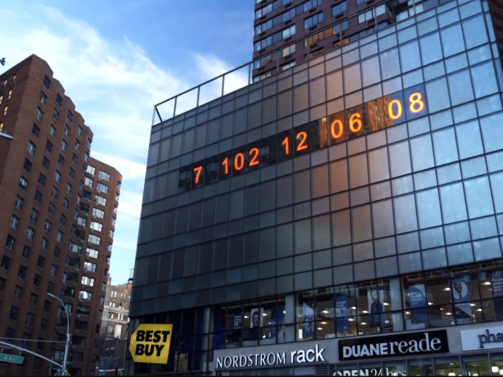

Our climate is changing, but why cant we?
Our planet is getting hotter and hotter and is desperate to sustain itself.
There are a lot of problems out there that needs to be tackled if we want our planet (and its inhabitants)
to survive. Some of these problems are easy fixes while others take a longer time, but they're all worth doing to sustain the human civilization.
Let me list out some of the world's problems for you: Global Warming, Pollution, Deforestation, Destertification, Acid Rain, Droughts...
The state of the planet isn't something that most people worry about. It seems like such a minor problem, but there are a number of
major things that are happening and one of them is a risk of death from the UV radiations due to the minimizing ozone layer.
But how did our planet end up in such a disastrous state!?
Since the 1970's, Humans pressure on nature has soared rapidly which resulted in using more and more of our natural resources. But this has come at a cost.
Over the last 50 years or so, nature's capacity to support our ever-growing needs has plummeted, leading to the quality and quantity of our
resources to decline.
Im pretty sure you must have heard about the famous 'Climate Clock' based in New York. A clock that demonstrates how much time we have left to reuce our impact on the earth's atmosphere
before its possible destruction based on the current emmission trends.

The world is in a disastrous state, and we need to do something about it.
The earth is not a planet, it's the only habitable planet we have, we need to save it.